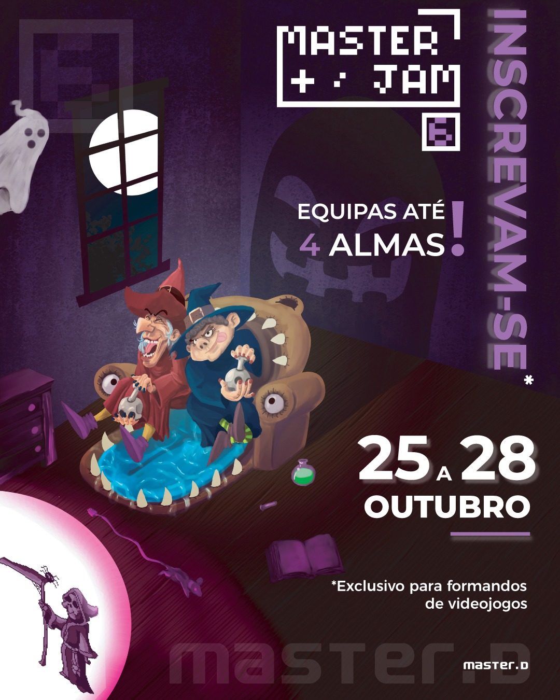

O curso de Arte Digital especializa-se na criação de conteúdos visuais 2D e 3D para videojogos, preparando o formando para adquirir competências artísticas e técnicas para atuar como Digital Artist.

A indústria dos videojogos é atualmente uma das áreas de entretenimento que mais cresce no mundo, gerando milhares de milhões de euros e superando a música e o cinema combinados. Trata-se de um setor exigente, que procura profissionais qualificados e especializados nas diferentes áreas do desenvolvimento.
Ao longo da formação, aprenderá as bases do desenho e da animação, aprofundando técnicas de modelação, escultura e texturização de assets para videojogos. A criação de personagens, cenários e elementos animados exige conceptualização, estudo prévio e adaptação técnica, competências que serão trabalhadas de forma estruturada.
Na vertente 2D, o curso foca-se na criação de arte digital e animação com Photoshop e Aseprite, duas das ferramentas mais utilizadas, sobretudo em pixel art. Irá desenvolver capacidades de desenho, conceptualização e adaptação de estilos, preparando os seus trabalhos para integração em videojogos.
Na vertente 3D, aprenderá a utilizar o Blender, software amplamente utilizado na indústria, realizando modelação de personagens, cenários e outros assets. Desenvolverá fundamentos de desenho aplicados à modelação e aprenderá a adaptar modelos em versões low poly para videojogos AAA ou mobile.
O curso inclui ainda sessões práticas nos centros formativos, onde poderá aplicar os conhecimentos adquiridos com acompanhamento especializado.
Na Master.D, terá acesso a manuais atualizados, recursos didáticos estruturados, webinars, masterclasses e workshops, reforçando a aprendizagem e aproximando-o da realidade do mercado.
Esta formação é indicada para quem pretende desenvolver competências técnicas sólidas e preparar-se para integrar a indústria dos videojogos com bases consistentes.